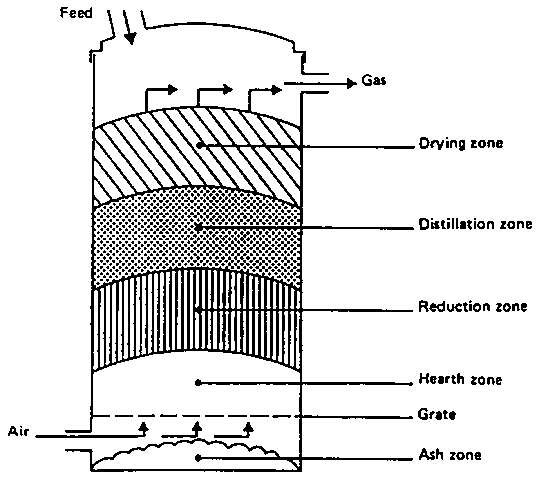
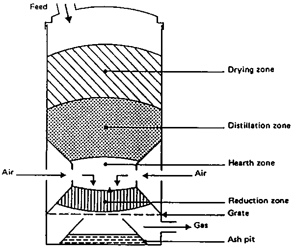
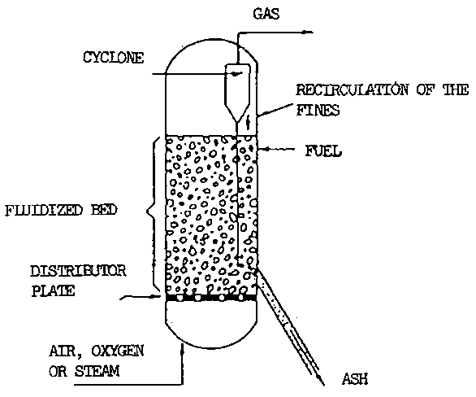

2.3.1 Updraught or counter current gasifier
2.3.2 Downdraught or co-current gasifiers
2.3.3. Cross-draught gasifier
2.3.4. Fluidized bed gasifier
2.3.5 Other types of gasifiers
The oldest and simplest type of gasifier is the counter current or updraught gasifier shown schematically in Fig. 2.7.
Figure 2.7 Updraught or counter current gasifier

The air intake is at the bottom and the gas leaves at the top. Near the grate at the bottom the combustion reactions occur, which are followed by reduction reactions somewhat higher up in the gasifier. In the upper part of the gasifier, heating and pyrolysis of the feedstock occur as a result of heat transfer by forced convection and radiation from the lower zones. The tars and volatiles produced during this process will be carried in the gas stream. Ashes are removed from the bottom of the gasifier.
The major advantages of this type of gasifier are its simplicity, high charcoal burn-out and internal heat exchange leading to low gas exit temperatures and high equipment efficiency, as well as the possibility of operation with many types of feedstock (sawdust, cereal hulls, etc.) .
Major drawbacks result from the possibility of "channelling" in the equipment, which can lead to oxygen break-through and dangerous, explosive situations and the necessity to install automatic moving grates, as well as from the problems associated with disposal of the tar-containing condensates that result from the gas cleaning operations. The latter is of minor importance if the gas is used for direct heat applications, in which case the tars are simply burnt.
A solution to the problem of tar entrainment in the gas stream has been found by designing co-current or downdraught gasifiers, in which primary gasification air is introduced at or above the oxidation zone in the gasifier. The producer gas is removed at the bottom of the apparatus, so that fuel and gas move in the same direction, as schematically shown in Fig. 2.8.
Figure 2.8 Downdraught or co-current gasifier

On their way down the acid and tarry distillation products from the fuel must pass through a glowing bed of charcoal and therefore are converted into permanent gases hydrogen, carbon dioxide, carbon monoxide and methane.
Depending on the temperature of the hot zone and the residence time of the tarry vapours, a more or less complete breakdown of the tars is achieved.
The main advantage of downdraught gasifiers lies in the possibility of producing a tar-free gas suitable for engine applications.
In practice, however, a tar-free gas is seldom if ever achieved over the whole operating range of the equipment: tar-free operating turn-down ratios of a factor 3 are considered standard; a factor 5-6 is considered excellent.
Because of the lower level of organic components in the condensate, downdraught gasifiers suffer less from environmental objections than updraught gasifiers.
A major drawback of downdraught equipment lies in its inability to operate on a number of unprocessed fuels. In particular, fluffy, low density materials give rise to flow problems and excessive pressure drop, and the solid fuel must be pelletized or briquetted before use. Downdraught gasifiers also suffer from the problems associated with high ash content fuels (slagging) to a larger extent than updraught gasifiers.
Minor drawbacks of the downdraught system, as compared to updraught, are somewhat lower efficiency resulting from the lack of internal heat exchange as well as the lower heating value of the gas. Besides this, the necessity to maintain uniform high temperatures over a given cross-sectional area makes impractical the use of downdraught gasifiers in a power range above about 350 kW (shaft power).
Cross-draught gasifiers, schematically illustrated in Figure 2.9 are an adaptation for the use of charcoal. Charcoal gasification results in very high temperatures (1500 °C and higher) in the oxidation zone which can lead to material problems. In cross draught gasifiers insulation against these high temperatures is provided by the fuel (charcoal) itself.
Advantages of the system lie in the very small scale at which it can be operated. Installations below 10 kW (shaft power) can under certain conditions be economically feasible. The reason is the very simple gas-cleaning train (only a cyclone and a hot filter) which can be employed when using this type of gasifier in conjunction with small engines.
A disadvantage of cross-draught gasifiers is their minimal tar-converting capabilities and the consequent need for high quality (low volatile content) charcoal.
It is because of the uncertainty of charcoal quality that a number of charcoal gasifiers employ the downdraught principle, in order to maintain at least a minimal tar-cracking capability.
Figure 2.9 Cross-draught gasifier
The operation of both up and downdraught gasifiers is influenced by the morphological, physical and chemical properties of the fuel. Problems commonly encountered are: lack of bunkerflow, slagging and extreme pressure drop over the gasifier
A design approach aiming at the removal of the above difficulties is the fluidized bed gasifier illustrated schematically in Fig. 2.10.
Air is blown through a bed of solid particles at a sufficient velocity to keep these in a state of suspension. The bed is originally externally heated and the feedstock is introduced as soon as a sufficiently high temperature is reached. The fuel particles are introduced at the bottom of the reactor, very quickly mixed with the bed material and almost instantaneously heated up to the bed temperature. As a result of this treatment the fuel is pyrolysed very fast, resulting in a component mix with a relatively large amount of gaseous materials. Further gasification and tar-conversion reactions occur in the gas phase. Most systems are equipped with an internal cyclone in order to minimize char blow-out as much as possible. Ash particles are also carried over the top of the reactor and have to be removed from the gas stream if the gas is used in engine applications.
Figure 2.10 Fluidized bed gasifier

The major advantages of fluidized bed gasifiers, as reported by Van der Aarsen (44) and others, stem from their feedstock flexibility resulting from easy control of temperature, which can be kept below the melting or fusion point of the ash (rice husks), and their ability to deal with fluffy and fine grained materials (sawdust etc.) without the need of pre-processing. Problems with feeding, instability of the bed and fly-ash sintering in the gas channels can occur with some biomass fuels.
Other drawbacks of the fluidized bed gasifier lie in the rather high tar content of the product gas (up to 500 mg/m³ gas), the incomplete carbon burn-out, and poor response to load changes.
Particularly because of the control equipment needed to cater for the latter difficulty, very small fluidized bed gasifiers are not foreseen and the application range must be tentatively set at above 500 kW (shaft power).
Fluidized bed gasifiers are currently available on a semi-commercial basis from several manufacturers in Europe and U.S.A.
A number of other biomass gasifier systems (double fired, entrained bed, molten bath), which are partly spin-offs from coal gasification technology, are currently under development. In some cases these systems incorporate unnecessary refinements and complications, in others both the size and sophistication of the equipment make near term application in developing countries unlikely. For these reasons they are omitted from this account.